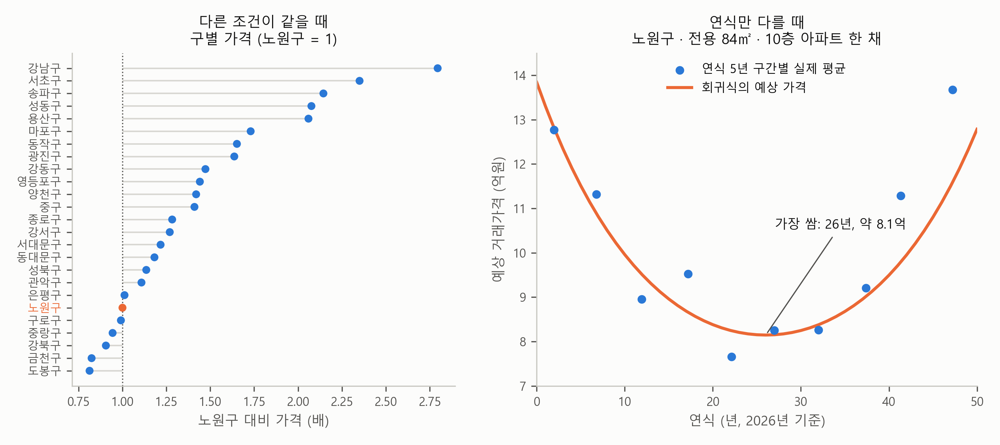

1. 완성된 보고서 — 서울 아파트 값은 무엇으로 정해지나#
이번 장의 주제는 다중회귀분석(multiple regression)입니다. 회귀분석에 변수를 여러 개 함께 넣는 방법이죠. 단순회귀분석은 “면적이 넓으면 가격이 얼마나 높은가”처럼 원인 후보 하나와 결과 하나의 관계를 봤습니다. 하지만 현실의 결과는 원인 하나로 정해지는 경우가 드뭅니다. 임금은 학력에도, 경력에도, 직종에도 달려 있습니다. 매출은 광고비에도, 가격에도, 계절에도 달려 있고요. 다중회귀분석은 이렇게 여러 요인을 한꺼번에 넣고, 요인 하나하나가 결과에 얼마만큼 관계되는지를 따로따로 숫자로 답합니다. 그래서 학술 연구에서 가장 많이 쓰이는 분석 도구이고, 기업이 가격을 매기거나 성과를 따질 때도 기본으로 씁니다.
예전에는 이 분석을 직접 배워 직접 돌려야 했습니다. 요즘은 AI에게 데이터를 넣어 주고 분석해 달라고 하면 금방 해줍니다. 우리는 AI가 만들어 준 보고서를 잘 이해하고, 잘 점검하면 됩니다. AI가 해 주는 것, 잘 이해하기. 그게 우리의 일입니다.
이번 장의 예시도 아파트 가격입니다. 단순회귀분석 장에서는 전용면적 하나로 거래가격을 설명했습니다. 이번에는 전용면적에 층, 연식, 구를 더해 네 가지 요인으로 거래가격을 설명합니다.
데이터 — 같은 실거래가, 이번엔 서울 전체#
데이터는 단순회귀분석 장과 같습니다. 국토교통부 실거래가 공개시스템에서 내려받은 서울 아파트 매매 1년치(계약일 2025년 10월 ~ 2026년 10월, 2026년 10월 7일 추출)입니다. 수집 과정은 단순회귀분석 장에서 자세히 다뤘습니다. 달라진 것은 두 가지입니다. 하나는 범위입니다. 단순회귀분석 장은 노원구 하나로 좁혔지만, 이번 장은 서울 25개 구의 거래를 전부 씁니다. 다른 하나는 거래를 고르는 기준입니다. 해제거래를 걸러 내는 것은 같고, 이번에는 직거래도 걸러 냈습니다. 그 이유는 아래에서 봅니다. 그렇게 남은 63,163건이 이 장의 자료입니다.
새로 쓰는 변수들은 따로 구한 것이 아닙니다. 내려받은 CSV에 이미 들어 있던 항목을 분석에 쓰기 좋게 다듬었을 뿐입니다.
층: CSV의 층을 그대로 씁니다.
연식: CSV에는 건축년도가 있습니다. 2026에서 건축년도를 빼서 “지은 지 몇 년 됐나”로 바꿨습니다. 2001년에 지은 아파트라면 연식 25년입니다.
구: CSV의 시군구(예: “서울특별시 노원구 상계동”)에서 구 이름만 떼어 냈습니다.
CSV에는 거래유형이라는 항목도 있습니다. 중개사를 거친 중개거래인지, 사는 사람과 파는 사람이 직접 계약한 직거래인지를 나타냅니다. 해제거래를 뺀 66,589건 가운데 3,426건(5%)이 직거래인데, 이 장에서는 이 거래들을 분석에서 뺐습니다. 직거래에는 개인들이 한 채씩 사고파는 시장의 거래와 성격이 다른 거래가 많이 섞여 있습니다. 직거래의 43%는 연식이 0~1년인 새 아파트인데, 중개거래에서는 이런 아파트가 0.5%뿐입니다. 이 새 아파트 거래의 대부분은 공공기관이 새로 지은 소형 아파트를 한 단지에서 한꺼번에 사들인 것입니다. 한 단지에서 200채 넘게 같은 날 계약된 경우도 있습니다. 시장의 가격을 설명하려는 분석에 성격이 다른 거래가 섞이면 결과를 읽기 어려워지므로, 해제거래처럼 미리 걸러 낸 것입니다. 무엇을 분석에서 뺄지 정하는 것도 분석의 일부이고, 보고서는 그 결정을 분석 대상 줄에 적어 둡니다.
단순회귀분석 장에서는 직거래를 따로 빼지 않았습니다. 노원구 7,366건 가운데 직거래는 256건뿐이라, 빼고 다시 분석해도 기울기는 0.0818에서 0.0819로 거의 같습니다.
같은 84㎡인데 값이 다르다#
서울 전체로 넓히면 가격의 폭이 훨씬 넓어집니다. 중위 거래가는 9.5억원이지만, 1억원이 안 되는 소형부터 200억원이 넘는 대형까지 있습니다. 전용면적이 더 다양해지니 당연하다고 할 수도 있습니다. 그런데 면적을 맞춰 놓고 봐도 차이가 큽니다. 가장 흔한 평형인 전용 84㎡만 모아 보면, 중위 거래가가 노원구에서는 8.5억원, 강남구에서는 29억원입니다. 같은 넓이인데 3배가 넘습니다.
그러면 이 3배는 전부 “강남이라서”일까요? 꼭 그렇지만은 않습니다. 두 구의 84㎡ 아파트는 넓이만 같을 뿐 다른 점도 있습니다. 예를 들어 노원구 쪽이 대체로 더 오래됐습니다(중위 연식 27년 대 20년). 그러니 3배 안에는 구의 차이와 연식의 차이가 섞여 있습니다. 둘을 떼어 내려면 “연식도 같고, 층도 같고, 다른 것도 다 같은 아파트끼리” 비교해야 합니다. 현실에서 그런 짝을 찾기는 어렵습니다. 다중회귀분석은 그 비교를 계산으로 해냅니다.
이 장의 질문은 두 가지입니다. 면적, 층, 연식, 구 가운데 무엇이 서울 아파트 가격의 차이를 설명할까요? 그리고 다른 조건은 그대로 두고 그중 하나만 바꾸면, 가격은 얼마나 달라질까요?
이 질문들을 AI에게 맡겨 봤습니다. AI가 서울 1년치 매매 기록 파일을 열어 이 네 가지로 거래가격을 설명하는 다중회귀분석을 하게 하고, 그 결과를 1쪽 보고서로 요청했습니다. 그렇게 받은 보고서가 아래에 있습니다. 먼저 한 번 읽어 보세요. 단순회귀분석 장의 보고서를 읽어 봤다면 낯익은 칸이 많을 것입니다. 낯선 줄이 나와도 괜찮습니다. 그 줄들을 읽을 수 있게 만드는 것이 이 장의 일입니다.
AI가 만든 1쪽 보고서
서울 아파트 값은 무엇으로 정해지나 — 면적, 층, 연식, 구로 본 거래가격
분석 대상: 서울 25개 구 아파트 매매 실거래 63,163건 (계약일 2025년 10월 ~ 2026년 10월, 해제거래와 직거래 제외) · 자료: 국토교통부 실거래가 공개시스템
요약
전용면적, 층, 연식, 구로 서울 아파트 가격 차이의 72%가 설명된다 (\(R^2\) = 0.72).
다른 조건이 같을 때 면적이 1% 넓으면 가격은 0.94% 높고, 한 층 높으면 1.1% 높다. 같은 조건이라면 강남구 아파트는 노원구의 2.8배다.
연식과 가격의 관계는 직선이 아니라 U자다. 약 26년 된 아파트의 가격이 가장 낮고, 신축과 40년 이상 된 아파트가 비싸다.

그림. 왼쪽: 다른 조건이 같을 때 구별 가격(노원구 = 1). 오른쪽: 노원구의 전용 84㎡, 10층 아파트 한 채를 두고 연식만 바꿨을 때 회귀식이 예상하는 가격(주황 곡선). 파란 점은 곡선에 연식 5년 구간별 평균 잔차를 더한 값이다.
회귀 결과
로그(거래가격) = 로그(전용면적) + 층 + 연식 + 연식² + 구 더미 24개 (기준: 노원구)
추정값 |
표준오차 |
\(t\)값 |
95% 신뢰구간 |
\(p\)값 |
|
|---|---|---|---|---|---|
로그(전용면적) |
0.935 |
0.004 |
255.2 |
0.928 ~ 0.942 |
< 0.001 |
층 |
0.0107 |
0.0002 |
48.5 |
0.0102 ~ 0.0111 |
< 0.001 |
연식 (년) |
−0.0411 |
0.0005 |
−87.5 |
−0.0420 ~ −0.0402 |
< 0.001 |
연식² |
0.00079 |
0.00001 |
81.7 |
0.00077 ~ 0.00081 |
< 0.001 |
구 더미 (강남구) |
1.032 |
0.008 |
130.5 |
1.016 ~ 1.047 |
< 0.001 |
\(n\) = 63,163, \(R^2\) = 0.719, 잔차 표준오차 0.34 (로그), 나머지 구 더미 23개는 그림의 왼쪽 패널
해석
계수 읽는 법 — 계수 하나하나는, 다른 조건은 모두 똑같고 그 변수 하나만 다른 두 아파트의 가격이 평균적으로 얼마나 다른지를 말한다. 가격에 로그를 취했으므로 계수는 퍼센트나 배로 바꿔 읽는다.
면적과 층 — 다른 조건이 같을 때 면적이 1% 넓으면 가격은 0.94% 높고, 한 층 높으면 1.1% 높다.
연식 — 연식과 가격의 관계는 U자다. 26년 무렵 가격이 가장 낮고, 그보다 새것이거나 오래되면(재건축 기대) 비싸다. 그래서 연식과 연식²을 함께 넣어 곡선을 그렸다.
구 — 노원구를 기준으로 한 더미 변수다. 강남구 더미 1.032는 같은 조건에서 강남구 아파트가 노원구의 약 2.8배라는 뜻이다.
불확실성과 설명력 — 표의 계수는 모두 95% 신뢰구간이 좁아 정밀하게 추정됐고(면적 탄력성 0.93~0.94), 0일 가능성은 사실상 배제된다(모두 \(p\) < 0.001). 네 가지 요인이 가격 차이의 72%를 설명하지만, 같은 조건에서도 실제 가격은 보통 예측값의 0.7배에서 1.4배 사이로 흩어진다(잔차 표준오차 0.34).
한계
이 결과는 상관이지 인과가 아니다. 단지 규모, 지하철역과의 거리, 학군처럼 자료에 없는 요인은 반영되지 않았다.
보고서 내려받기: PDF(그림 포함) · 원문(.md)
보고서의 다섯 부분#
보고서는 단순회귀분석 장의 보고서와 거의 같은 다섯 부분으로 되어 있습니다. 요약, 그림, 회귀 결과, 해석, 그리고 한계입니다. 달라진 것은 칸마다 담긴 변수가 하나에서 여럿으로 늘었다는 점입니다.
요약은 세 줄입니다. 첫 줄은 네 가지 요인으로 서울 아파트 가격 차이의 72%가 설명된다는 것입니다. 같은 서울 전체 자료를 면적 하나로 설명하면 38%에 그칩니다. 둘째 줄이 이 장의 중심입니다. “다른 조건이 같을 때” 면적이 1% 넓으면 가격은 0.94% 높고, 한 층 높으면 1.1% 높고, 강남구 아파트는 노원구의 2.8배라는 것이죠. 앞에서 본 84㎡ 중위 거래가 기준 3배 이상의 차이가 다른 조건을 맞추자 2.8배로 바뀌었습니다. 셋째 줄은 연식과 가격의 관계가 직선이 아니라 U자라는 것입니다.
그림은 두 패널로 되어 있습니다. 왼쪽 패널에는 서울 25개 구가 한 줄씩 있습니다. 주황색 점이 기준인 노원구(= 1)이고, 파란 점이 오른쪽으로 멀수록 같은 조건에서 노원구보다 비싼 구입니다. 오른쪽 패널은 아파트 한 채 이야기입니다. 노원구를 대상으로 전용 84㎡, 10층 아파트 한 채를 정해 두고, 연식만 바꿨을 때 가격이 어떻게 달라지는지를 그렸습니다. 지은 지 26년쯤에 가격이 가장 낮고, 그보다 새것이거나 더 오래되면 비쌉니다. 사실 이 오른쪽 패널은 이 장 전체를 한 장면에 담고 있습니다. 다중회귀분석의 계수가 답하는 질문이 바로 이런 꼴이기 때문입니다. 아파트 한 채를 정해 두고, 면적과 층과 구 같은 다른 조건은 그대로 둔 채 연식 하나만 바꾸면 가격이 얼마나 달라지는가. 오른쪽 패널은 이 질문의 답을 연식 0년부터 50년까지 이어 그린 것이고, 보고서의 다른 계수들도 각각 자기 변수 하나에 대해 같은 질문에 답합니다.
회귀 결과의 표에서 머리 칸(추정값, 표준오차, \(t\)값, 95% 신뢰구간, \(p\)값)은 단순회귀분석 장에서 이미 읽어 본 것들입니다. 달라진 것은 변수의 수입니다. 단순회귀분석 장의 표에는 면적 하나뿐이었는데, 이번에는 층, 연식, 연식², 구 더미가 함께 들어 있습니다. 연식²이 무엇인지, “구 더미 (강남구)”의 “더미”가 무엇인지는 지금 몰라도 됩니다.
미리 하나만 봐 두세요. 표의 둘째 줄, 층의 계수 0.0107입니다. 다른 조건이 같을 때 한 층 높으면 1.1% 비싸다는 뜻이죠. 같은 자료로 회귀분석을 하더라도 층 하나만 넣으면 이 숫자는 한 층에 1.9%가 됩니다. 같은 층의 효과인데 함께 넣은 변수에 따라 왜 숫자가 바뀔까요? 이 물음이 다음 절의 출발점입니다.
해석은 표의 숫자를 말로 풀었습니다. 첫 항목 “계수 읽는 법”이 이 장의 열쇠입니다. 계수 하나하나는, 다른 조건은 모두 똑같고 그 변수 하나만 다른 두 아파트의 가격이 평균적으로 얼마나 다른지를 말한다는 것이죠. 이어서 면적, 층, 연식, 구의 계수를 차례로 읽고, 불확실성과 설명력으로 끝납니다.
한계는 한 줄입니다. 단순회귀분석 장의 보고서에도 있던 단서로, 이 결과는 상관이지 인과가 아니며 자료에 없는 요인은 반영되지 않았다는 것입니다.
이 장의 진행 순서#
다음 네 절이 이 보고서를 한 부분씩 읽습니다.
다른 조건이 같다면 — 다중회귀분석의 계수가 무슨 뜻인지. 함께 넣는 변수에 따라 계수가 달라지는 이유.
숫자가 아닌 변수 — 구처럼 숫자가 아닌 것을 회귀식에 넣는 법. 더미 변수와 기준 구, 강남구 계수 1.032가 2.8배가 되는 계산, 구를 넣으면 달라지는 다른 계수.
효과가 집단마다 다를 때 — 한 층의 효과가 강남 3구와 그 밖의 구에서 같을까? 보고서 밖으로 한 걸음 나가 보는 분석, 상호작용.
직선으로 부족할 때 — 연식과 연식². 직선 대신 곡선을 그리는 법과 보고서의 그림 오른쪽 패널의 U자.
네 절을 지나고 나면 이 보고서의 모든 줄을 읽을 수 있습니다. 그리고 읽을 줄 알게 된 보고서는 여러분이 자기 데이터로 같은 분석을 요청할 때 함께 보여 줄 본보기가 됩니다.